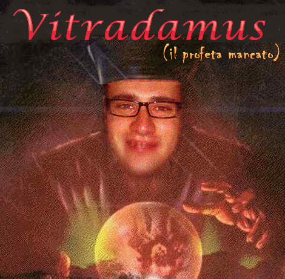

Dopo "Io sono il tuo Re", a distanza di pochi mesi, ecco l'attesissimo seguito
"Vitradamus: Il Profeta mancato"
Il 21 febbraio 2011 presso il "Locale di Pippetto", solo pochi eletti, hanno avuto la fortuna di assistere alla profezia..mancata. Per chi se la fosse persa, ecco a voi, il testo integrale:
"La prossima, sarà LA domenica perfetta:
1. la juve vincerà;
2. ti batterò 3 a 0;
3. metterò in campo Okaka per vedere la tua faccia quando ti segnerà contro;
4. 'mic-co-li! mic-co-li! mic-coli!' [coro d'incitamento]"
Vediamo, invece, cosa è successo nella realtà:
1. "la juve vincerà"
---> la juve ha perso
2. "ti batterò 3 a 0"
---> ho vinto 2 o 3 a 1
3. "metterò in campo Okaka per vedere la tua faccia quando ti segnerà contro"
---> non ha proprio giocato
4."mic-co-li! mic-co-li! mic-coli!"!
---> infortuanto
Ormai - dopo l'ennesima profezia mancanta - il "Locale di Pippetto" è divenuto luogo di pelligrinaggio: una folla oceanica sta cercando di entrare DISPERATAMENTE in questo luogo mistico con la speranza di trovare lui.... Vitradamus.
Perchè?
Vogliono ricevere una profezia, da lui, il mitico Profeta, per poi fare l'esatto contrario...
P.S.
con questo smetto di prendere in giro Vito: oramai non mi diverto più, lo batto ogni volta, sta diventando tutto troppo scontato...la scontatezza mi sta annoiando!!!